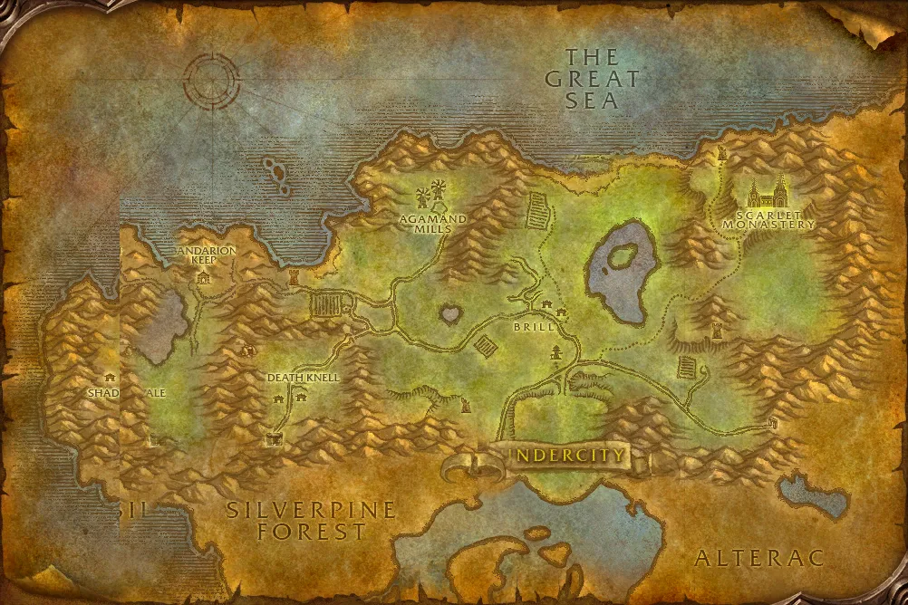

Accès
 Entrée Clairières de Tirisfal 82.6, 33.8
Entrée Clairières de Tirisfal 82.6, 33.8 5 joueurs · niveaux 30 à 46
5 joueurs · niveaux 30 à 46 8 quêtes · 11 boss
8 quêtes · 11 boss
Le point rouge marque l'entrée du donjon.
Toutes les zones sont sur notre carte interactive.
La forteresse de la Croisade écarlate dans les Clairières de Tirisfal, en quatre ailes : cimetière, bibliothèque, armurerie et cathédrale.
📅 Mise à jour le 4 novembre 2026🛠 Patch 1.60.1.70755

Entrée Clairières de Tirisfal 82.6, 33.8 5 joueurs · niveaux 30 à 46 8 quêtes · 11 bossLe point rouge marque l'entrée du donjon.
Toutes les zones sont sur notre carte interactive.
| Objet | Type |
|---|---|
| Bâton d'entraînement de Loksey | Deux mains |
| Gants de dressage de chien | Mains |
| Objet | Type |
|---|---|
| Ravageuse | Deux mains |
| Epaulière d'Herod | Épaules |
| Heaume du berserker enragé | Tête |
| Jambières écarlates | Jambes |
| Objet | Type |
|---|---|
| Puissance de Mograine | Deux mains |
| Gantelets de divinité | Mains |
| Egide du commandant écarlate | Bouclier |
| Jambières écarlates | Jambes |
| Objet | Type |
|---|---|
| Chapeau de Whitemane | Tête |
| Main de la droiture | Main droite |
| Amulette de Triune | Cou |
| Objet | Type |
|---|---|
| Tisonnier de torture | Une main |
| Objet | Type |
|---|---|
| Châle d'inquisiteur | Épaules |
| Brassards en cuir marqué | Poignets |
| Bottes poussiéreuses en mailles | Pieds |
| Objet | Type |
|---|---|
| Mantelet de mage de sang | Épaules |
| Orbe du Prophète oublié | Main gauche |
| Objet | Type |
|---|---|
| Robe de Doan | Torse |
| Mantelet de Doan | Épaules |
| Bâtonnet d'illusion | Deux mains |
| Lame hypnotique | Une main |
| Objet | Type |
|---|---|
| Aube morbide | Deux mains |
| Cestes d'ébène | Mains |
| Voile embaumé | Tête |
| Objet | Type |
|---|---|
| Oeil d'Echine-de-fer | Doigt |
| Poing d'Echine-de-fer | Une main |
| Thorax d'Echine-de-fer | Torse |
| Objet | Type |
|---|---|
| Baguette de nécromancie | Distance |
| Jambières flétries | Jambes |
| Talisman de Ghostshard | Cou |
Butin d'après les données de WoW Classic : Forever a ajouté de nouveaux objets dans les donjons, la liste sera complétée en jeu. Seuls les objets de qualité inhabituelle et mieux sont listés. Passe la souris sur un objet pour voir ses caractéristiques (info-bulle Wowhead), ou clique pour ouvrir sa fiche.
Donnée par : Maître apothicaire Faranell (Fossoyeuse)
Donnée par : Vorrel Sengutz (Monastère écarlate)
Récompense : Cape d'acier sinistre · Mantelet de malédiction · Bottes de Vorrel
Donnée par : Parqual Fintallas (Fossoyeuse)
Donnée par : Sage Truthseeker (Les Pitons-du-Tonnerre)
Récompense : Vil Protecteur · Orbe Oméga · Targe de Forcestone
Donnée par : Bibliothécaire Mae Paledust (Forgefer)
Récompense : Recommandation de la Ligue des explorateurs
Donnée par : Magus Olvek (Montagnes d'Alterac)
Donnée par : Raleigh le Dévot (Contreforts de Hautebrande)
Récompense : Epée de sérénité · Mordos · Menace noire · Orbe de Lorica
Donnée par : Varimathras (Fossoyeuse)
Récompense : Epée de malédiction · Canne du Prophète · Collier du sang de dragon
Noms des quêtes, des PNJ et des objets d'après les données du jeu (Polestar, CC BY 4.0, et Factoruide/Questie).